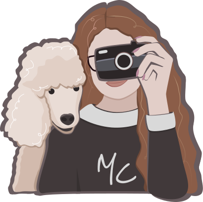

<div class="wrapper">
    sdfssd
</div>


<!-- <!DOCTYPE html>
<html lang="en">
<head>
    <meta charset="UTF-8">
    <meta name="viewport" content="width=device-width, initial-scale=1.0">
    <title>Micheala Cibulková</title>
    <link rel="icon" type="image/x-icon" href="/images/favicon.ico">

    <link rel="stylesheet" href="/css/style.css">

    <link rel="preconnect" href="https://fonts.googleapis.com">
    <link rel="preconnect" href="https://fonts.gstatic.com" crossorigin>
    <link href="https://fonts.googleapis.com/css2?family=Jomhuria&family=Nunito+Sans:opsz,wght@6..12,400;6..12,700&family=Reenie+Beanie&display=swap" rel="stylesheet">
</head>


<body class="background--white">
    <header class="menu menu-dark">
        
        <a class="menu__mc" href="index.html" >Michaela Cibulková</a>
        
        
        
        <input type="checkbox" class="menu__checkbox" id="menu-checkbox">
        <label for="menu-checkbox" class="menu__toggler">☰</label>
        
        


        <div class="menu__list">
            <a class="menu__item menu__item--dark" href="omne.html">o mně</a>
            <a class="menu__item menu__item--dark" href="#">portfolio</a>
            <a class="menu__logo logo menu__logo--dark" href="index.html">MC</a>
            <a class="menu__item menu__item--dark" href="#">nabídka</a>
            <a class="menu__item menu__item--dark" href="#">kontakt</a>
        </div>
   </header>

   <div class="menu__wave">
    <svg class="menu__wave-img" xmlns="http://www.w3.org/2000/svg" viewBox="0 0 1440 320">
        <path fill="#78686C" fill-opacity="1" d="M0,192L60,181.3C120,171,240,149,360,133.3C480,117,600,107,720,106.7C840,107,960,117,1080,122.7C1200,128,1320,128,1380,128L1440,128L1440,0L1380,0C1320,0,1200,0,1080,0C960,0,840,0,720,0C600,0,480,0,360,0C240,0,120,0,60,0L0,0Z"></path>
      </svg>
   </div>


   <section class="page-content">
        
   </section>


   <svg class="footer__wave" xmlns="http://www.w3.org/2000/svg" viewBox="0 0 1440 320">
        <filter id="shadow" color-interpolation-filters="sRGB">
            <fedropshadow dx="-20" dy="-8" stdDeviation="5" flood-opacity="0.1"/>
        </filter>
        <path fill="#78686C" fill-opacity="1" d="M0,288L48,277.3C96,267,192,245,288,240C384,235,480,245,576,234.7C672,224,768,192,864,181.3C960,171,1056,181,1152,192C1248,203,1344,213,1392,218.7L1440,224L1440,320L1392,320C1344,320,1248,320,1152,320C1056,320,960,320,864,320C768,320,672,320,576,320C480,320,384,320,288,320C192,320,96,320,48,320L0,320Z"></path>
  </svg>
  


   <footer class="footer">
        <div class="footer__content">

            <div class="footer__icons">
                
                
                
            </div>

            

            <p class="footer__text" >Hezký den!</p>

        </div>
   </footer>


</body>


</html> -->